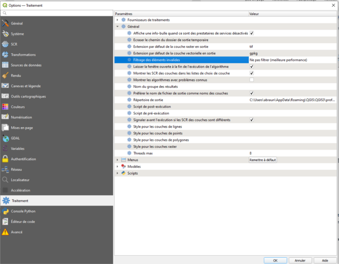

Les projets devront toujours avoir la structure suivante:

Enregistrer votre nouveau projet dans un répertoire ad-hoc.
par exemple dans le répertoire REP_MYPROJECT sous le nom MYPROJECT

Les pyramides utilisées, comme les dessins que l’utilisateur va effectuer pour sélectionner les objets, peuvent contenir des géométries temporairement invalides.
Pour rendre l’outil utilisable, il faut impérativement effectuer le réglage suivant:
A partir du menu : "Préférences" -> "Options" -> "Traitement"-> "Général" -> "Filtrage des éléments invalides".
Sélectionner dans le menu déroulant la valeur : Ne pas filtrer (meilleurs performances).
L'accès au menu déroulant se fait par un double-clic gauche ou droit.

Créer un nouveau projet a partir du template fourni : "Projet" -> "Nouveau depuis un modèle" -> "LABELISATION_TEMPLATE.qgs"
Les projets devront toujours avoir la structure suivante:
Enregistrer votre nouveau projet dans un répertoire ad-hoc.
par exemple dans le répertoire REP_MYPROJECT sous le nom MYPROJECT